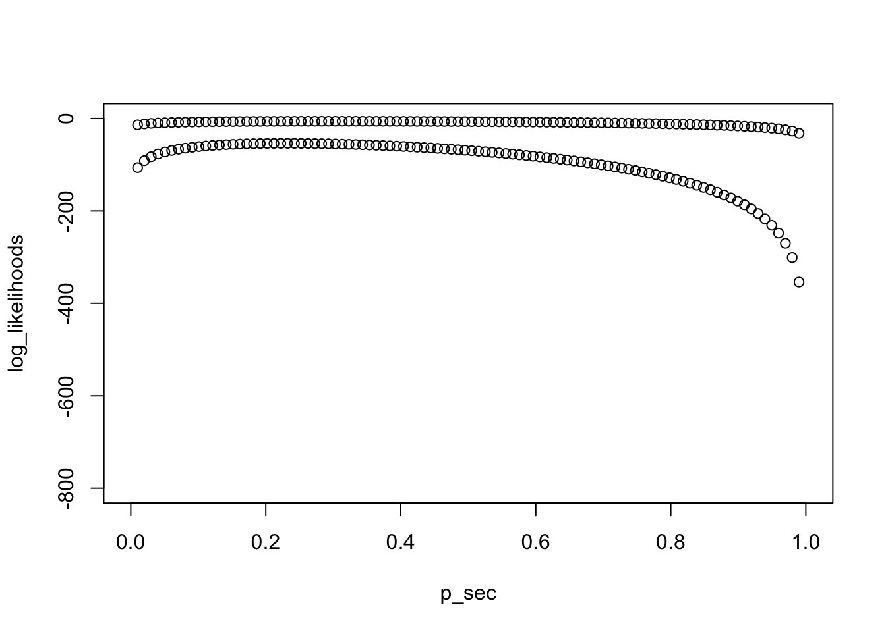

Last updated: 2018-01-09
Code version: f01647e
Tutor: Jan van den Broek
Binary outcome.
Contingency table. \(\chi^2\) table.
Population description
Population description
\[^{b}\log(x) = y\iff b^y = x\] \[^e\log(x) = \ln(x)\]
\[\log(x*y) = \log(x) + \log(y)\] \[\log(\frac{x}{y}) = \log(x) - \log(y)\]
\[\log(x^a) = a*\log(x)\]
\[\ln(\frac{\pi}{1-\pi})=a \iff \pi = \frac{e^a}{1+e^a}\]
Log odds
\[\ln(\frac{\pi}{1-\pi})=w\]
Where
\[w = \beta_0 + \sum_{i}{\beta_i*x_i}\]
Then \(\beta_i = \ln(OddsRatio_{x_i})\)
For interpretation it can be better to center predictors.
For instance: \(age - mean(age)\)
This gives a better interpretation of the intercept.
require(purrr)
library(tidyverse)
set.seed(2)
n = 100
x1 = rnorm(n)
or1 = 2
b1 = log(or1)
print(b1)[1] 0.6931472base_risk = 0.3
base_odds = base_risk / (1-base_risk)
b0 = log(base_odds)
print(b0)[1] -0.8472979y <- x1 %>%
map_dbl(function(x) {
odds = exp(x * b1) * base_odds
risk = (odds) / (1+odds)
sample(c(0,1), size = 1, prob = c(1-risk, risk))
})
fit <- glm(y ~ x1, family = binomial)
summary(fit)
Call:
glm(formula = y ~ x1, family = binomial)
Deviance Residuals:
Min 1Q Median 3Q Max
-1.3550 -0.8417 -0.6708 1.0917 2.0045
Coefficients:
Estimate Std. Error z value Pr(>|z|)
(Intercept) -0.8193 0.2305 -3.554 0.000379 ***
x1 0.6166 0.2068 2.982 0.002862 **
---
Signif. codes: 0 '***' 0.001 '**' 0.01 '*' 0.05 '.' 0.1 ' ' 1
(Dispersion parameter for binomial family taken to be 1)
Null deviance: 125.37 on 99 degrees of freedom
Residual deviance: 115.44 on 98 degrees of freedom
AIC: 119.44
Number of Fisher Scoring iterations: 3data.frame(
)data frame with 0 columns and 0 rowssimulate_logit <- function() {print("foo")}\[P(Y_i = y_i) = \pi^{y_i}(1-\pi)^{1-y_i}\]
This can be written for every \(n\) observations \(y_i\) in a sample.
The likelihood of oberving all \(y_i\)
\[L(\pi) = P(Y_1 = y_1 \& Y_2 = y_2 \& ... \& Y_n = y_n) = P(Y_1=y_1)*P(Y_2=y_2)*...*P(Y_n = y_n)\] \[ L(\pi) =\prod_i^n{P(Y_i=y_i)}=\pi^{\sum_i{y_i}}*(1-\pi)^{\sum_i{(1-y_i)}}\]
Likelihood is a function of \(\pi\), it gives the likelihood of \(\pi\), given the observed data.
When \(\pi\) maximizes the likelihood is the maximum likelihood estimator
Log likelihood
\[l(\pi) = ln[L(\pi)] = \sum_i^n[y_iln(\pi)+(1-y_i)ln(1-\pi)]\]
We can get the max by differentiating with respect to \(\pi\).
\[l'(\pi) = \sum_i^n[\frac{y_i}{\pi}-\frac{1-y_i}{1-\pi}]\]
Function of log-likelihood can be very peaked or very flat. The exact estimators can be the same, but confidence bounds different.
To check in which situation you are, calculate second derivative
Definition of information: \(-l''(p)\)
\[l''(\pi) = \sum_i[-\frac{y_i}{\pi^2}-\frac{1-y_i}{(1-\pi)^2}]\]
likelihood <- function(p, observations) {
n_positive = sum(observations)
(p^sum(n_positive))*((1-p)^(length(observations)-n_positive))
}
log_likelihood <- function(p, observations) {
n_positive = sum(observations)
n_negative = length(observations) - n_positive
n_positive*log(p)+n_negative*log(1-p)
}
log_likelihood_first_derivative <- function(p, observations) {
n_positive = sum(observations)
n_negative = length(observations) - n_positive
n_positive / p - (n_negative)/(1-p)
}
log_likelihood_second_derivative <- function(p, observations) {
n_positive = sum(observations)
n_negative = length(observations) - n_positive
-n_positive / p^2 - (n_negative)/(1-p)^2
}Compare shape of likelihood function for 2 different sample sizes
set.seed(2)
n <- 10
pi <- 0.2
x <- sample(c(0,1), size = n, replace = T, prob = c(1-pi, pi))
p_sec = seq(0,1, length.out = 100)
log_likelihoods <- map_dbl(p_sec, function(p) log_likelihood(p, x))
plot(p_sec, log_likelihoods, ylim = c(-800,0))
n2 <- 100
x2 <- sample(c(0,1), size = n2, replace = T, prob = c(1-pi, pi))
points(p_sec, map_dbl(p_sec, function(p) log_likelihood(p, x2)))
Look at derivatives
set.seed(2)
n_sec = 10^(1:6)
pi <- 0.2
second_derivatives <- map_dbl(n_sec, function(n) {
x = sample(c(0,1), size = n, replace = T, prob = c(1-pi, pi))
log_likelihood_second_derivative(pi, x)
})
data.frame(n_sec, second_derivatives) n_sec second_derivatives
1 1e+01 -85.9375
2 1e+02 -695.3125
3 1e+03 -6601.5625
4 1e+04 -62757.8125
5 1e+05 -628328.1250
6 1e+06 -6261132.8125Standard error: \(SE = \sqrt(\frac{1}{information})\)
If you can get the likelihood for your model, you done.
Likelihood ratio: \(\frac{L_i}{L_j}\)
\[AIC = -2*l + 2*n_{parameters}\]
Goal: minimize AIC
If the difference between AIC’s < 2, then they are the same.
sessionInfo()R version 3.3.2 (2016-10-31)
Platform: x86_64-apple-darwin13.4.0 (64-bit)
Running under: macOS Sierra 10.12.6
locale:
[1] en_US.UTF-8/en_US.UTF-8/en_US.UTF-8/C/en_US.UTF-8/en_US.UTF-8
attached base packages:
[1] stats graphics grDevices utils datasets methods base
other attached packages:
[1] forcats_0.2.0 stringr_1.2.0 dplyr_0.7.4 readr_1.1.1
[5] tidyr_0.7.2 tibble_1.3.4 ggplot2_2.2.1 tidyverse_1.2.1
[9] purrr_0.2.4
loaded via a namespace (and not attached):
[1] Rcpp_0.12.14 cellranger_1.1.0 git2r_0.20.0 plyr_1.8.4
[5] bindr_0.1 tools_3.3.2 digest_0.6.13 lubridate_1.7.1
[9] jsonlite_1.5 evaluate_0.10.1 nlme_3.1-131 gtable_0.2.0
[13] lattice_0.20-35 pkgconfig_2.0.1 rlang_0.1.6 psych_1.7.5
[17] cli_1.0.0 rstudioapi_0.7 yaml_2.1.16 parallel_3.3.2
[21] haven_1.1.0 bindrcpp_0.2 xml2_1.1.1 httr_1.3.1
[25] knitr_1.18 hms_0.4.0 rprojroot_1.2 grid_3.3.2
[29] glue_1.2.0 R6_2.2.2 readxl_1.0.0 foreign_0.8-69
[33] rmarkdown_1.8 modelr_0.1.1 reshape2_1.4.2 magrittr_1.5
[37] backports_1.1.0 scales_0.4.1 htmltools_0.3.6 rvest_0.3.2
[41] assertthat_0.2.0 mnormt_1.5-5 colorspace_1.3-2 stringi_1.1.6
[45] lazyeval_0.2.0 munsell_0.4.3 broom_0.4.2 crayon_1.3.4 This R Markdown site was created with workflowr